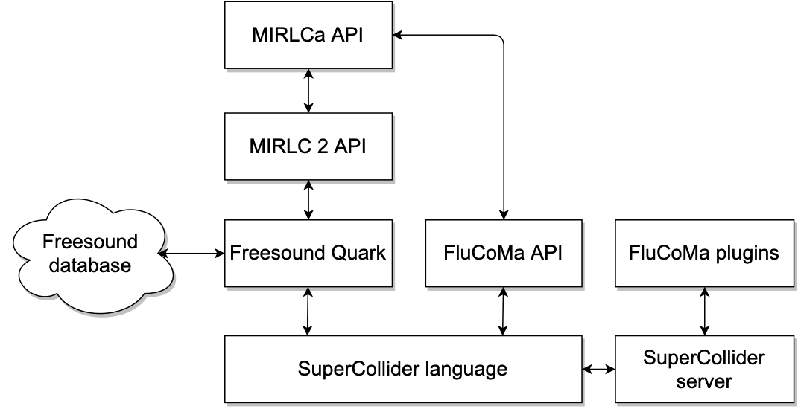
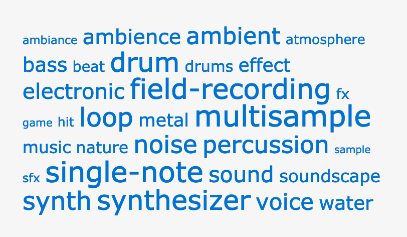
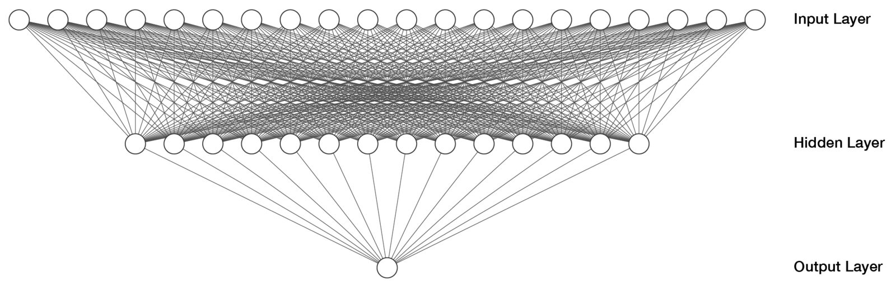
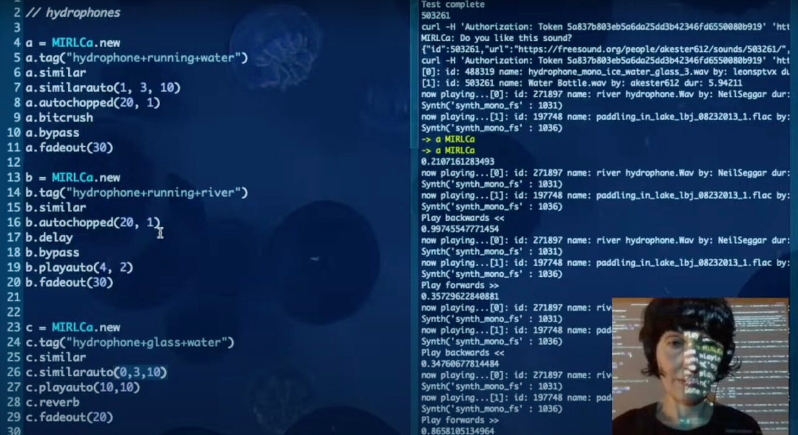
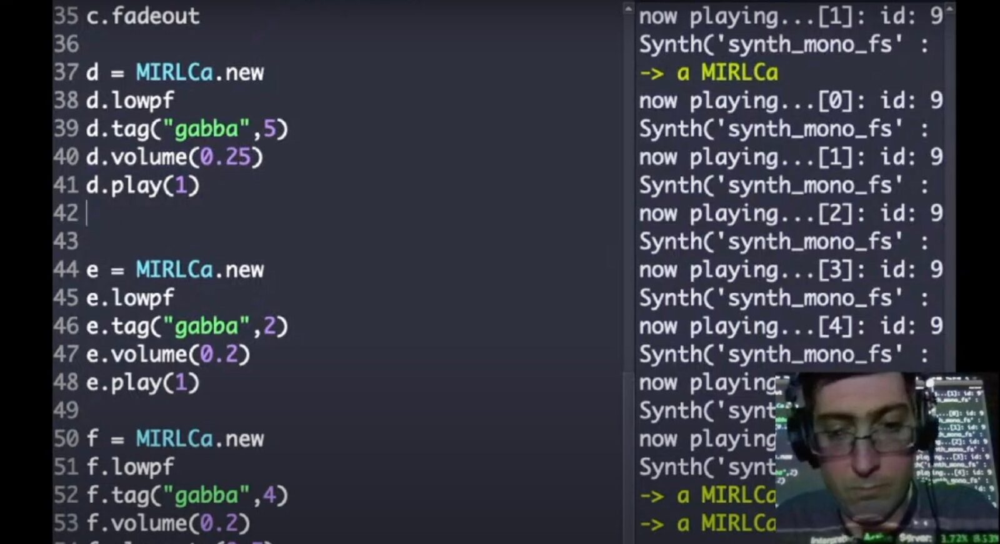

Live Coding with the Cloud and a Virtual Agent
Abstract
The use of crowdsourced sounds in live coding can be seen as an example of asynchronous collaboration. It is not uncommon for crowdsourced databases to return unexpected results to the queries submitted by a user. In such a situation, a live coder is likely to require some degree of additional filtering to adapt the results to her/his musical intentions. We refer to this context-dependent decisions as situated musical actions. Here, we present directions for designing a customisable virtual companion to help live coders in their practice. In particular, we introduce a machine learning (ML) model that, based on a set of examples provided by the live coder, filters the crowdsourced sounds retrieved from the Freesound online database at performance time. We evaluated a first illustrative model using objective and subjective measures. We tested a more generic live coding framework in two performances and two workshops, where several ML models have been trained and used. We discuss the promising results for ML in education, live coding practices and the design of future NIMEs.
Author Keywords
AI, live coding, virtual agents, MIR
CCS Concepts
•Applied computing → Sound and music computing; Performing arts; •Computing methodologies → Machine learning; •Information systems → Music retrieval;
Introduction
Live coding brings together music and code in live performance and has been practised for almost two decades [1]. Writing lines of code in real time is engaging. However, it can also become too slow at performance time. Collaborative live performance can balance out the potential issues with speed and mistakes that make solo live coding more challenging [2]. There exist several approaches to collaboration in live coding [3][4][5][6][7][8][9][10][2], including the use of crowdsourced sounds from the cloud [11][12][13][14], which can be seen as an example of asynchronous collaboration. When using large crowdsourced databases, there is a risk factor in the unpredictability of search results. This situation can bring sounds that are very far from suitable in a given musical context.
Here we present directions for designing a customisable virtual companion to assist live coders in their practice. More specifically, we introduce a machine learning (ML) system that, based on the preference of the live coder within a situated musical action (defined through a small set of training examples), filters sounds retrieved by similarity search from the Freesound crowdsourced online database [15] during a performance. Our ML model is a binary classifier based on a multilayer perceptron (MLP) neural network architecture and takes Mel Frequency Cepstral Coefficients (MFCC) as input. In our initial experiments, a small dataset of 100 sounds was used for training combined with 30 sounds for testing, which helped define the configuration of the MLP. From a live coder perspective, the purpose of this classifier is to filter sounds predicted as “good” from the search results of a database query. We assessed an illustrative model both objectively and subjectively. In objective evaluations, we obtained accuracies in the range of 76%-83%. We also evaluated the model subjectively and found that it performed considerably better at discriminating between “good” and “bad” sounds. The assessment is presented here as an example so that other live coders can assess their own generated models.
Up to the present, the system has been used in two solo performances by two live coders and in two online workshops with 40 participants in total. The two performances showcased that the tool can be adapted to different live coding styles by training the ML models with varied context-specific criteria. The workshop attendees were also able to train their models using a live-coding interface, and some of them adapted the virtual agents (VAs) to their live-coding practice. Following a participatory design process, the workshop participants reported feedback on how they envision integrating our system into their practice and how to improve the design. The results and findings indicate that our approach allows live coders to build their ML models for assisting situated musical actions in live coding, yet further evaluation is in our scope.
Background
In recent years, we are observing more presence of machine learning algorithms in the design and evaluation of NIMEs as, for example, embedded devices that incorporate trained machine learning models, either by augmenting acoustic instruments [16][17] or by creating new digital musical instruments (DMIs) [18][19]. There is also a range of ML toolkits for music, which allow practitioners to create their DMIs based on training their ML models from parameter mappings, such as notably Wekinator [20], ml.lib [21], FluidCorpusMap [22], and Learner.js [23]. ML toolkits for music have been instrumental in bringing ML concepts to the NIME community.
Machine learning in education is an emerging area, where it is relevant to unfold the complexities of ML and open the floor for enquiry and debate. A human-centred approach of using machine learning algorithms as a creative musical tool was proposed by Fiebrink and Caramiaux [24], by adapting the HCI concept of interactive machine learning (IML) [25]. Interactive machine learning incorporates a human-driven interaction between humans and machines that allows users to quickly generate ML models in an interactive setting using small datasets. Fiebrink and Sonami report the result of several years of co-designing a tool from an IML perspective between a computer scientist/musician and an instrument builder/performer [18]. IML has also been used to produce multi-user models in mobile music by Roma et al. [26].
Live coding puts the spotlight on the time of the programming action in computer-based music making, described with the property of liveness by Tanimoto [27]. This property makes live coding a suitable scenario to investigate the potential of machine learning in performance from an IML perspective. Some approaches and systems explore machine learning in live coding. With a few exceptions [28][29], most of the systems conduct the training process offline, before the performance. The Mégra system [29] brings the training process of machine learning to the performance so that it is also part of the “algorithmic thinking” of the live coder, while Sema [28] is a user-friendly online system that allows practitioners to create their live coding language and adapt machine learning algorithms to their live coding practice. From an IML perspective, there are clear benefits to the possibility of adapting software behaviour to individual needs and being able to do so through human-driven interaction. Therefore, it is both a challenge and an opportunity to explore the synergies between IML and live coding, given that both share the liveness property. We explore these synergies through the use of machine listening for music performance.
The potential of connecting machine listening with live coding was identified by Collins, who adapted music information retrieval (MIR) algorithms for tasks such as beat tracking, onset detection, and pitch detection in the Algoravethmic remix system [30]. In Ordiales and Bruno’s APICultor [11], sounds are mixed and transformed in a live coding fashion using hardware where multiple audio features based on tempo, rhythm, mood, and frequency content, among others, are selected to filter the incoming sounds in real time. Another example is Navarro and Ogborn’s Cacharpo [7], which provides a VA that ‘listens’ to the audio produced by the live coder using machine listening and music information retrieval techniques. The aim is to track spectral information (e.g. brightness, noisiness, onset detection, energy, and zero-crossings) and react with code generation in real time. There are a number of other explorations of ML in live coding ranging from rule learning [31][32], to Cibo’s performance style generation [33][34], to collaborative live coding improvisation [10], and gamification [35], among others. However, similar to the research of MIR in live coding [36], the research on ML in live coding is still in its infancy.
The System
The MIRLCAuto Project
This work builds on our previous research on collaborative live coding. In particular, it combines two pieces of research. First, our exploration of the potential role of a VA whose purpose is to counterbalance the limitations of live coding [37]. Second, the approach to the live repurposing of sounds used in MIRLC [14], a user-friendly live-coding environment built within SuperCollider to query crowdsourced sounds from the Freesound online database using MIR techniques. Our recent work develops a follow-up system named MIRLCAuto (MIRLCa), a VA for music information retrieval in live coding. The latter explores the theme of AI and autonomous agents in live coding.1 It particularly aims to creatively explore the use of large collections of sound data in live coding performance through (1) the use of machine learning and music information retrieval algorithms, and (2) the use of a virtual companion that can complement a human live coder in her/his practice. This paper describes a fundamental task within this project, by integrating a classifier to filter search results in the MIRLC system.
Research Question
Here we use the term situated musical action adapted from Lucy Suchman’s concept of situated action [38]. A situated musical action refers to any musical action related to a specific context, where we expect the VA to help the user in that action within that context. Learning about a situated musical action can either contribute to the content used in the live coding session (i.e. content-driven such as musical taste, music style, virtual instrument) or the musical structure (i.e. part-driven). The main rationale for this task is to provide flexibility to the live coder allowing them to (1) model the VAs according to their musical preferences, and (2) avoid retrieving sounds that are not suited to their musical context. The research question addressed in this paper is thus whether we can build a VA that learns from the musical preference of a live coder within a situated musical action by means of machine learning algorithms applied to the live exploration of a large database of sounds.
Research Methods
The overall research methods of this project include rapid prototyping [39] and participatory design techniques. To explore both, we have organised co-design workshops and concerts à la participatory design [40] to test the tool and receive continuous feedback. This ongoing conversation is reflected here in the sections of performances and workshops.
Outline of the System
The system leverages several technologies using the SuperCollider language. It builds on the MIRLCRep2 module within MIRLC 2 as the live-coding user interface to interact with the Freesound quark,2 which in turn allows for querying and retrieving sounds and the indexed data analysis information from the Freesound online database using the Freesound API.3 The FluCoMa library4 is used to provide the ML functionality. Figure 1 illustrates the general architecture.


Figure 1: Diagram of the system’s architecture.
Machine Learning Task
In this section, we explain the direction undertaken towards learning a model of preference for situated musical actions when retrieving sounds from Freesound and the iterative process followed to generate an illustrative ML model.
Task Implementation
This ML task was developed in three steps: (1) creating a manually annotated dataset for training and testing, (2) identifying suitable audio descriptors, and (3) training a suitable model using a multilayer perceptron (MLP) neural network classifier.
The implementation was based on the SuperCollider version of the Fluid Corpus Manipulation Toolbox [41]. In particular, the MLP object was used, along with utilities for data normalisation and management, using feature descriptors from the Freesound API as input.5 After creating and validating one example model, including the choice of descriptors, we then developed a series of methods for the live coder to be able to train their model based on a live coding interaction style. Examples of the datasets, the code for training, and relevant tutorials can be found in the project code repository at https://github.com/mirlca/code.
Creation of a Manual Dataset
The first step was to create an offline training process to later support the possibility of training an ML model using a live coding style. The Freesound database has 481,305 sounds at the time of writing this paper. However since our goal is to enable live coders to train their own models, our focus is on creating small datasets, as commonly seen in IML. In this case, we created a small but representative dataset hoping that the model would generalise to unexpected sounds. We made a selection of 100 sounds for the training dataset and 30 sounds for the testing dataset from the most popular tags (see Figure 2). The following 10 tags were used, selecting for each tag 10 sounds for training and 3 sounds for testing: electronic, bass, voice, drum, loop, noise, soundscape, ambience, metal, and effect.


Figure 2: Tag cloud of the most popular tags on Freesound.
For each tag, the first 10 results were selected. However, repeated sounds or very similar sounds (e.g. from the same collection), were skipped to obtain 130 unique sounds. In the rare situation of finding sounds with no available descriptors in the Freesound database, the sounds were also ignored.
Once the 130 sounds were selected, they were annotated by the first author with the label "good" or "bad" and associated with their Freesound sound ID. During the annotation process, the situated musical action consisted of labelling as “good” sounds those that could generically be used in solo live-coding sessions.
Identifying Suitable Audio Descriptors
The next step was to identify suitable audio descriptors and automatically complete the datasets with their corresponding audio descriptor values. Several audio descriptors are available in Freesound via the Essentia library.6 Two approaches were explored based on these available audio descriptors. We assessed the correctness of both based on the accuracy of the classification results, defined as the percentage of the number of correct predictions over the total number of predictions. Compared to other classification performance measures, accuracy requires an even number of examples for each class. However, it is easier to interpret, which is crucial for making the system easy to use for live coders.
Informed by the literature [7][33][34], we started with initial explorations using 9 audio descriptors related to the pitch, rhythm, brightness and noisiness of the sound samples, including information of both mean and variance. However, the accuracy results were modest.
For the second approach, a vector of 13 Mel Frequency Cepstral Coefficients (MFCCs) audio descriptors was used. MFCCs are low-level features initially developed in automatic speech and speaker recognition for describing timbral properties of audio signals. They are commonly used in many types of sounds including environmental sounds, music, and speech. We obtained the best result using the 26 audio descriptors respective to the mean and variance of each of the 13 MFCCs, which yielded accuracy results between 76%-83% and made it a suitable approach for the task.
Iterative Training of a Suitable ML Model
The example dataset was used to experiment with the MLP architecture and find a suitable network size and configuration. The MLP model was chosen for its general flexibility and ease of use. We also experimented with dimensionality reduction to reduce the size of the model and discard potentially irrelevant dimensions from the MFCC vectors. The best results were obtained when the 26 audio descriptors were reduced to 20 dimensions via Principal Component Analysis (PCA) for dimensionality reduction, and values were standardised to zero mean and unit variance. The architecture of the MLP that was finally used for this task consisted of one hidden layer of 14 nodes, with ReLU activations (Figure 3).


Figure 3: Architecture of the MLP neural network for the binary classifier of situated musical actions.
Model Evaluation
Once we identified a suitable MLP architecture, we built a ML framework for other live coders to use, enabling them to build their VAs based on specific situated musical actions. Beyond the positive accuracy results described in the previous section, we decided that further objective assessment of the example model would not yield additional benefits. Since we aim to support the creation of new models trained by live coders for their situated musical actions, we added the accuracy measure to the system, so that users can easily assess their own models.
We complemented the objective assessment with a subjective assessment by the live coder who trained the example model (first author), in particular how well the similarity function was performing when retrieving a similar sound from a target random sound. A set of 100 pairs of random-similar sounds was assessed. Half of them used the VA that filtered the results from the similarity list provided by the Freesound API retrieving the first best candidate result (treatment condition). The other half did not use any filter on the similarity results, thus retrieving the first result from the list (control condition). The 100 trials were randomised in the two conditions delivering 50 sounds for each condition. The live coder was requested to annotate, for each trial, both the random target sound and the retrieved similar sound in terms of “good” or “bad” sounds. The rationale is that if a target sound is already found to be good, it is more likely that both conditions will retrieve a similarly “good” sound. However, if the target random sound is found to be a “bad” sound, the VA should recommend an adequate sound based on the trained model.
As expected, we found almost no difference in the overall count of sounds annotated as “good” (41 “good” sounds in treatment and 38 “good” sounds in control). However, when looking at only the transition from “bad” sounds to the labelled similar sound (23 cases in treatment and 17 cases in control), we found that 70% of “good” sounds were retrieved when using the VA, while only 35% of “good” sounds were retrieved when not using the VA. These promising results confirm our hypothesis that the VA has a considerable effect in deciding what similar sounds to retrieve based on training for a particular situated musical action.
The Performances
In this paper, we report the experience from the first concert of the project, “Similar Sounds: A Virtual Agent in Live Coding”, which was a collaboration with IKLECTIK,7 a platform dedicated to supporting experimental contemporary art and music in London. This concert consisted of two performances and a Q&A panel. Although the concert was originally programmed to take place at IKLECTIK’s venue, due to the COVID-19 pandemic we had to move the concert online (Figure 4).
Figure 4: Online concert “Similar Sounds: A Virtual Agent in Live Coding”, IKLECTIK. Video source: https://youtu.be/ZRqNfgg1HU0
The performances were done by the first and the second author of this paper, respectively. Both performances had a personally trained model based on the annotation process explained in the previous section.
The first performance (Figure 5) used the illustrative model. It had three sections based on the sound sources of liquid, solid and gas states using sounds tagged as “hydrophones” for the water state, “contact mics” for the solid state, and “gas atmospheric” sounds for the gas state. The queries by tags were combined with the search of similar sounds, the latter only retrieving similar sounds predicted as “good” sounds. Automatic functions and effects were also used.


Figure 5: “Similar Sounds: A Virtual Agent in Live Coding”. Online performance by Anna Xambó at IKLECTIK.
The second performance (Figure 6) also focused on field recordings with a more concrete narrative. The model was trained to favour environmental sound and reject human voice and synthetic music loops, which are common in Freesound. The structure was organised around a set of tags and then improvised by manipulating the buffers loaded by the MIRLCa library in SuperCollider. In each section, the results from the tag searches were extended by similarity search and the model was used to ensure that the results remained within the desired aesthetic. This allowed a more open attitude for launching similarity queries with unknown results, encouraging improvisation.


Figure 6: “Similar Sounds: A Virtual Agent in Live Coding”. Online performance by Gerard Roma at IKLECTIK.
A follow-up Q&A session invited the artists to reflect on the use of the library in their performances. From the audience questions and reactions, we gathered that the simplicity of the system and the use of semantic tags help the legibility of the performance, as it is straightforward to understand the relationship between the tags and the resulting sounds, even if the results from a large sound database like Freesound were not known in advance. There was also interest in the definition of similarity for sound since there can be many possible ways to define it from a perceptual point of view. In a way, the role of the model is to mediate, not only between the different tastes and styles of the internet users who upload the sounds but also between the expectations and the results provided by the similarity search in the Freesound API. Thus, an interesting pointer for the future is to analyse how the definition of the similarity measure interacts with the use of the classifier.
The Workshops
Workshop Design
At the time of this writing, we have conducted two online workshops. Again due to COVID-19, we had to adapt the content and delivery to the online medium. The workshops were organised by the first and third authors, who were also the two instructors. The first one was in collaboration with IKLECTIK in ‘virtual’ London. The second one was in ‘virtual’ Barcelona in collaboration with l’ull cec,8 an independent organisation that coordinates activities in the fields of sound art and experimental music. Both workshops had been planned as local but ended up having participants from around the world.
The purpose of this hands-on online workshop was to allow the participants (1) to explore the MIRLC 2 tool, and (2) to expose them to how machine learning can be useful to improve the live coding experience. The workshop sought to accommodate both beginners and experts in programming by using a team-based learning approach [42]. At the end of the workshop, the participants were able to train their ML models using our system’s live-coding training methods.
Participants’ Feedback
We gathered both formal and informal feedback from the 40 workshop attendees of the two workshops. Here we focus on summarising the participants’ feedback about the tool related to the ML task explained in this paper. We used the results from an online survey, from the shared document used during each of the workshops, and from the group discussions held during and after the workshop in an anonymised format. At the end of each workshop, we distributed an anonymous online feedback survey with questions about what the participants had liked best, least, and about how to improve the workshop and the tool. In the workshop group discussions, we discussed in depth the future directions that the tool could take, as well as new potential applications.
Thirteen participants answered the survey from the 40 participants who were accepted to take part in the two workshops (33% in total): 3 women, 7 men, 2 non-binary, and 1 prefer not to disclose. In terms of knowledge in programming, 3 participants defined themselves as below average, 7 average, and 3 above average. Their knowledge in SuperCollider was defined as: 1 never used it before, 4 below average, 6 average, and 2 above average. Their knowledge in machine learning was stated as 7 never used it before, 4 below average, 1 average, and 1 above average.
The participants liked the potential of the tool, the idea of “presenting Freesound, FluCoMa, SuperCollider and a live-coding approach in a single library”, and the fact that the tools were free. They also mentioned an interest in extending the library to better fit their practices: “I think some ideas on the library are cool and would like to know how to extend them to my own use (or contribute to the project.)” It was also highlighted that the transparency of getting to tinker with the code was useful and empowering: “I loved the tool (…) and the fact that, in order to understand and handling it, it was necessary to open its files and study its classes and how it was built. This process was empowering and enriching to me.”
The participants liked least about the tool that it is still under development and at some points not sufficiently tested. It was reported that “it had some bugs, and it is not fully documented” as well as that “it would be great to double-check some issues the tool has so then at the moment to have a workshop for the participants could be more easy and friendly the learning.” However, it was also appreciated by the participants to be part of the design process of the tool: “it seems to need a lot of testing, development and improvement but it made me feel we (students, new users) might take part in that.”
Several ideas were suggested on how the tool can be improved, including: “the integration with some other live coding tools or languages like TidalCycles is a point”; “open up the class API to allow more flexibility in manipulating internal elements for those of us who wish to have more control over what the library's doing”; and “improve error handling, display meaningful error messages, display the progress of downloads and general status of the application. Sometimes it's hard to know what's happening ‘behind the scenes’.”
We also gathered feedback from informal conversations, email exchanges, and support sessions, among others. The support sessions enabled four participants to adapt the tool to their practice, who recorded each a work-in-progress video that is available online.9 This provides evidence of how the VA can be applied to a diverse set of musical situations. Most of them trained more than one ML model.
In summary, the following ideas were suggested to improve the training and performance of the tool: (1) user experience improvements during the training process (e.g. make training incremental and persistent across sessions, the combination of random and ID queries during the training process, a better organisation of the downloaded files), (2) additional features in the performance mode (e.g. load as many models as wanted to be used for structuring, or distinguishing between different timbres or instruments), and (3) possibilities to integrate the tool into a diverse set of live coding practices.
Discussion and Future Work
The results and findings indicate that our ML system is a promising tool to be used by the live coding community with an interest in incorporating ML to their artistic practice, both beginners and experts. We have proved that it is possible to learn from a particular situated musical action and to engage with the techno-artistic community in the discussion of other potential situated musical actions where this VA could successfully be applied. Presenting the tool as an ongoing development has opened the door for lively conversations with the workshop participants about how they can take ownership over the code.
We realised that our approach can be compared to a recommender system. The main difference between a recommender system for live coding such as [13] and our system, is that in the latter, each live coder can train their own VA based on specific situated musical actions. It is, therefore, a more flexible and suitable approach for satisfying the requirements of the diverse set of situated musical actions that arise in the context of a live performance. Furthermore, our system takes inspiration from the IML approach [25], enabling the training process to be carried out with a series of methods and processes integrated into the live coding workflow, affording usage as a creative musical instrument [24]. Although the training process has been private to each live coder, the workshop participants have contributed to the tool design by proposing the integration of new methods suitable to their needs, even mentioning to include the training as part of the live-coding performance. The use of the MLP architecture has proved to be useful for rapid prototyping with IML [43].
The main limitation of our approach is the dependency on the similarity measure defined by the FreeSound API. We plan to incorporate more ways of defining random and similar queries, as well as to expand the support of a VA for filtering the results from random queries. It is also our hope to facilitate a better IML process when training the model in the live-coding workflow. We are looking forward to improving the integration of several ML models for each performer, the possibility of multi-user training of a single model, and, more generally, enabling the integration of the tool in a wider range of workflows.
Conclusions
In this paper, we presented an approach to collaborative live coding using crowdsourced sounds from the online database Freesound, a virtual companion that can help live coders in their practice by learning from their preference within situated musical actions. We designed a customisable VA and evaluated an illustrative ML model using objective and subjective measures. We also designed and assessed a follow-up ML framework that has been used by live coders in two performances and in two workshops, where several ML models have been trained and used.
The results and findings are promising and indicate potential directions that ML in live coding can take. The IML approach to training your model and the participatory design approach to the workshops and tool development can inform how to bring ML into education from a hands-on approach. The participants' feedback and use of the tool have showcased how the tool is envisioned to be integrated into diverse live coding practices. Finally, the organisation of performances and workshops during the development of the tool was inspired by a common practice in the NIME community, and we hope that our approach can also contribute to the design of future NIMEs by bringing different practitioners into a practice-based conversation.
Acknowledgements
We are very thankful to the workshop participants, as well as the partners and collaborators of the project. Special thanks to Isa Ferri, Ángel Faraldo and Iván Paz.
Compliance with Ethical Standards
This project is funded by the EPSRC HDI Network Plus Grant - Art, Music, and Culture theme. We obtained the informed consent of the participants of the survey.
Footnotes
See the project website at https://mirlca.dmu.ac.uk
↩- ↩
- ↩
- ↩
- ↩
- ↩
- ↩
- ↩
Interviews with workshop participants and their work-in-progress videos can be found at https://mirlca.dmu.ac.uk
↩
Citations
- ↩Collins, N., McLean, A., Rohrhuber, J., & Ward, A. (2003). Live Coding in Laptop Performance. Organised Sound, 8(3), 321–330.
- ↩Xambó, A., Freeman, J., Magerko, B., & Shah, P. (2016). Challenges and New Directions for Collaborative Live Coding in the Classroom. In International Conference of Live Interfaces (pp. 65–73). Brighton, UK.
- ↩McKinney, C. (2014). Quick Live Coding Collaboration In The Web Browser. In Proceedings of the International Conference on New Interfaces for Musical Expression (pp. 379–382). London, United Kingdom: Goldsmiths, University of London.
- ↩de Campo, A. (2014). Republic: Collaborative Live Coding 2003–2013. In A. Blackwell, A. McLean, J. Noble, & J. Rohrhuber (Eds.), Collaboration and Learning through LiveCoding (Dagstuhl Seminar 13382) (pp. 152–153). Dagstuhl, Germany.
- ↩Knotts, S. (2016). Algorithmic Interfaces for Collaborative Improvisation. In International Conference of Live Interfaces (pp. 232–237). Brighton, UK.
- ↩McLean, A. (2015). Reflections on Live Coding Collaboration. In M. Adkins & L. Segretier (Eds.), Proceedings of the Third Conference on Computation, Communication, Aesthetics and X (pp. 213–220). Porto, Portugal: Universidade do Porto.
- ↩Navarro, L., & Ogborn, D. (2017). Cacharpo: Co-performing Cumbia Sonidera with Deep Abstractions. In Proceedings of the International Conference on Live Coding. Morelia, Mexico.
- ↩Rohrhuber, J., de Campo, A., Wieser, R., Van Kampen, J.-K., Ho, E., & Hölzl, H. (2007). Purloined Letters and Distributed Persons. In Music in the Global Village Conference. Budapest, Hungary.
- ↩Sarwate, A., Tsuchiya, T., & Freeman, J. (2018). Collaborative Coding with Music: Two Case Studies with EarSketch. In J. Monschke, C. Guttandin, N. Schnell, T. Jenkinson, & J. Schaedler (Eds.), Proceedings of the International Web Audio Conference. Berlin, Germany: TU Berlin.
- ↩Subramanian, S., Freeman, J., & McCoid, S. (2012). LOLbot: Machine Musicianship in Laptop Ensembles. In Proceedings of the International Conference on New Interfaces for Musical Expression. Ann Arbor, Michigan: University of Michigan.
- ↩Ordiales, H., & Bruno, M. L. (2017). Sound Recycling From Public Databases: Another Bigdata Approach to Sound Collections. In Proceedings of the 12th International Audio Mostly Conference on Augmented and Participatory Sound and Music Experiences (p. 48:1-48:8).
- ↩Roberts, C., Allison, J., Holmes, D., Taylor, B., Wright, M., & Kuchera-Morin, J. (2016). Educational Design of Live Coding Environments for the Browser. Journal of Music, Technology &Education, 9(1), 95–116.
- ↩Smith, J., Weeks, D., Jacob, M., Freeman, J., & Magerko, B. (2019). Towards a Hybrid Recommendation System for a Sound Library. In IUI Workshops. Los Angeles, CA, USA.
- ↩Xambó, A., Roma, G., Lerch, A., Barthet, M., & Fazekas, G. (2018). Live Repurposing of Sounds: MIR Explorations with Personal and Crowdsourced Databases. In T. M. Luke Dahl Douglas Bowman (Ed.), Proceedings of the International Conference on New Interfaces for Musical Expression (pp. 364–369). Blacksburg, Virginia, USA: Virginia Tech.
- ↩Font, F., Roma, G., & Serra, X. (2013). Freesound Technical Demo. In Proceedings of the 21st ACM International Conference on Multimedia (pp. 411–412). Barcelona, Spain.
- ↩DeSmith, M. O., Piepenbrink, A., & Kapur, A. (2020). SQUISHBOI: A Multidimensional Controller for Complex Musical Interactions using Machine Learning. In R. Michon & F. Schroeder (Eds.), Proceedings of the International Conference on New Interfaces for Musical Expression (pp. 353–356). Birmingham, UK: Birmingham City University.
- ↩Macionis, M. J., & Kapur, A. (2018). Sansa: A Modified Sansula for Extended Compositional Techniques Using Machine Learning. In T. M. Luke Dahl Douglas Bowman (Ed.), Proceedings of the International Conference on New Interfaces for Musical Expression (pp. 78–81). Blacksburg, Virginia, USA: Virginia Tech.
- ↩Fiebrink, R., & Sonami, L. (2020). Reflections on Eight Years of Instrument Creation with Machine Learning. In R. Michon & F. Schroeder (Eds.), Proceedings of the International Conference on New Interfaces for Musical Expression (pp. 237–242). Birmingham, UK: Birmingham City University.
- ↩Næss, T. R., & Martin, C. P. (2019). A Physical Intelligent Instrument using Recurrent Neural Networks. In M. Queiroz & A. Xambó (Eds.), Proceedings of the International Conference on New Interfaces for Musical Expression (pp. 79–82). Porto Alegre, Brazil: UFRGS.
- ↩Fiebrink, R., Trueman, D., & Cook, P. R. (2009). A Meta-Instrument for Interactive, On-the-Fly Machine Learning. In Proceedings of the International Conference on New Interfaces for Musical Expression (pp. 280–285). Pittsburgh, PA, United States.
- ↩Bullock, J., & Momeni, A. (2015). ml.lib: Robust, Cross-platform, Open-source Machine Learning for Max and Pure Data. In E. Berdahl & J. Allison (Eds.), Proceedings of the International Conference on New Interfaces for Musical Expression (pp. 265–270). Baton Rouge, Louisiana, USA: Louisiana State University.
- ↩Roma, G., Green, O., & Tremblay, P. A. (2019). Adaptive Mapping of Sound Collections for Data-driven Musical Interfaces. In M. Queiroz & A. X. Sedó (Eds.), Proceedings of the International Conference on New Interfaces for Musical Expression (pp. 313–318). Porto Alegre, Brazil: UFRGS.
- ↩McCallum, L., & Grierson, M. S. (2020). Supporting Interactive Machine Learning Approaches to Building Musical Instruments in the Browser. In R. Michon & F. Schroeder (Eds.), Proceedings of the International Conference on New Interfaces for Musical Expression (pp. 271–272). Birmingham, UK: Birmingham City University.
- ↩Fiebrink, R., & Caramiaux, B. (2018). The Machine Learning Algorithm as Creative Musical Tool. In R. T. Dean & A. McLean (Eds.), The Oxford Handbook of Algorithmic Music (pp. 181–208). Oxford University Press.
- ↩Fails, J. A., & Olsen, D. R. (2003). Interactive Machine Learning. In Proceedings of the 8th International Conference on Intelligent User Interfaces (pp. 39–45). Miami, Florida, USA: Association for Computing Machinery.
- ↩Roma, G., Xambó, A., & Freeman, J. (2018). User-independent Accelerometer Gesture Recognition for Participatory Mobile Music. Journal of the Audio Engineering Society, 66(6), 430–438.
- ↩Tanimoto, S. L. (2013). A Perspective on the Evolution of Live Programming. In Proceedings of the 1st International Workshop on Live Programming (LIVE) (pp. 31–34). San Francisco, CA, USA.
- ↩Bernardo, F., Kiefer, C., & Magnusson, T. (2020). A Signal Engine for a Live Coding Language Ecosystem. Journal of the Audio Engineering Society, 68(10), 756–766.
- ↩Reppel, N. (2020). The Mégra System - Small Data Music Composition and Live Coding Performance. In Proceedings of the 2020 International Conference on Live Coding (pp. 95--104). Limerick, Ireland.
- ↩Collins, N. (2015). Live Coding and Machine Listening. In Proceedings of the First International Conference on Live Coding (pp. 4–11). Leeds, UK: ICSRiM, University of Leeds.
- ↩Paz, I. (2015). Live Coding Through Rule-Based Modelling of High-Level Structures: Exploring Output Spaces of Algorithmic Composition Systems. In Proceedings of the First International Conference on Live Coding (pp. 83–86). Leeds, UK: ICSRiM, University of Leeds.
- ↩Paz, I., & Roig, S. (2019). Tweaking Parameters, Charting Perceptual Spaces. In Proceedings of the Fourth International Conference on Live Coding (p. 353). Madrid, Spain: Medialab Prado / Madrid Destino.
- ↩Stewart, J., & Lawson, S. (2019). Cibo: An Autonomous TidalCyles Performer. In Proceedings of the Fourth International Conference on Live Coding (p. 353). Madrid, Spain: Medialab Prado / Madrid Destino.
- ↩Stewart, J., Lawson, S., Hodnick, M., & Gold, B. (2020). Cibo v2: Realtime Livecoding A.I. Agent. In Proceedings of the 2020 International Conference on Live Coding (ICLC2020) (pp. 20–31). Limerick, Ireland: University of Limerick.
- ↩Lorway, N., Jarvis, M., Wilson, A., Powley, E., & Speakman, J. (2019). Autopia: An AI Collaborator for Gamified Live Coding Music Performances. In 2019 Artificial Intelligence and Simulation of Behaviour Convention. Falmouth, UK.
- ↩Xambó, A., Lerch, A., & Freeman, J. (2019). Music Information Retrieval in Live Coding: A Theoretical Framework. Computer Music Journal, 42(4), 9–25.
- ↩Xambó, A., Roma, G., Shah, P., Freeman, J., & Magerko, B. (2017). Computational Challenges of Co-Creation in Collaborative Music Live Coding: An Outline. In Proceedings of the 2017 Co-Creation Workshop at the International Conference on Computational Creativity. Atlanta, GA, USA.
- ↩Suchman, L. A. (1987). Plans and Situated Actions: The Problem of Human-Machine Communication. Cambridge University Press.
- ↩Overmyer, S. P. (1991). Revolutionary vs. Evolutionary Rapid Prototyping: Balancing Software Productivity and HCI Design Concerns. In Proceedings of the 4th International Conference on Human-Computer Interaction (pp. 303–307). Stuttgart, Germany.
- ↩Muller, M. J., & Kuhn, S. (1993). Participatory Design. Communications of the ACM, 36(6), 24–28.
- ↩Tremblay, P. A., Roma, G., & Green, O. (2021). Digging it: Programmatic Data Mining as Musicking. In (Submitted).
- ↩Michaelsen, L. K., Knight, A. B., & Fink, L. D. (Eds.). (2004). Team-Based Learning: A Transformative Use of Small Groups in College Teaching. Westport, CT, USA: Praeger Publishers.
- ↩Bernardo, F., Zbyszyński, M., Grierson, M., & Fiebrink, R. (2020). Designing and Evaluating the Usability of a Machine Learning API for Rapid Prototyping Music Technology. Frontiers in Artificial Intelligence, 3(13), 1–18.